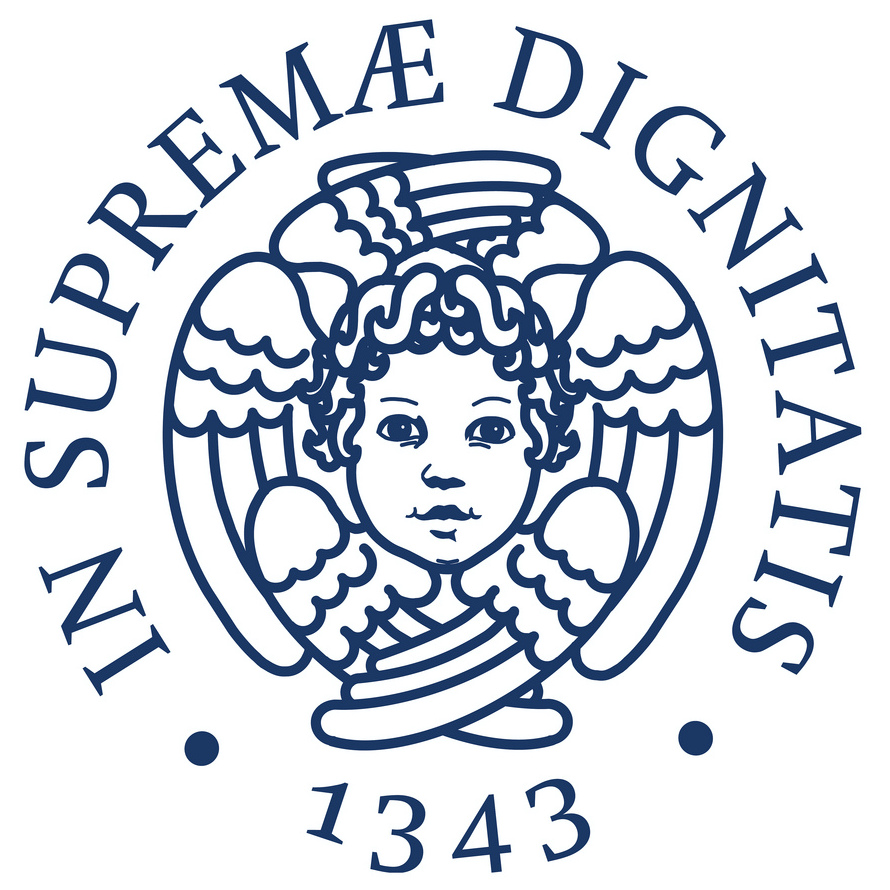

Short Bio
|
|
2016 – to-date PhD StudentI am a PhD student in the Department of Mechanical Engineering at University of California Riverside under the supervision of Prof. Fabio Pasqualetti |
|  | 2013 – 2016 Laurea Magistrale (M.Sc. equivalent)I completed a Laurea Magistrale degree (M.Sc. equivalent) in Robotics and Control Engineering at University of Pisa, Italy |
|
|
2010 – 2013 Laurea (B.Sc. equivalent)I completed a Laurea degree (B.Sc. equivalent) in Mechatronics Engineering at University of Padova, Italy |
CV available here.